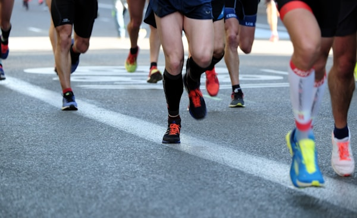
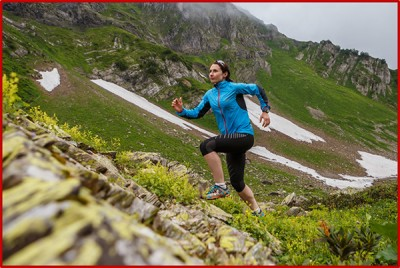
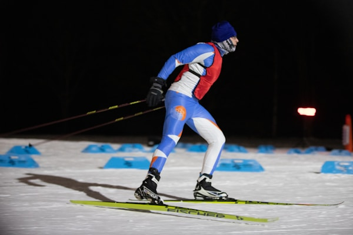

Лыжероллеры
Предстоящие старты и архив прошедших спортивных мероприятий.


Ежегодные мероприятия, объединённые в серии. Откройте серию, чтобы посмотреть её историю и материалы по годам.
Летняя серия стартов по лёгкой атлетике памяти Александра Толстых. Проводится ежегодно в Мытищах.
3 выпуска · 2024–2026
Ежегодный осенний кросс среди лыжников и любителей бега. Проводится в парках Москвы с 2018 года.
4 выпуска · 2023–2026
Серия городских забегов на дистанции от 3 до 21,1 км. Финальный старт сезона проходит в центре Москвы.
3 выпуска · 2024–2026
Зимняя серия лыжных гонок классическим и свободным стилем на трассах Вологды. Этапы Кубка АНО «АРТА-СПОРТ».
3 выпуска · 2024–2026По выбранным фильтрам мероприятий нет.